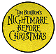

1
Surreal Make-Over Gallery
http://webpages.marshall.edu/~jtoney/facepage.html
Just for kicks, Allen Toney has been known to rearrange faces. You can view a few of them at "his Web site; the oil-painter-turned-computer-artist posts surreal redrawn portraits of users who mail him photographs of themselves. Mixing "liquid, sensual, neo-classical forms with mystical, mathematical" sensibilities, Toney "paints" and distorts photos of ordinary individuals into original works in styles borrowed from Salvador Dali, Rene Magritte and Max Ernst, among others. Of special interest on the site are the Make-Over Hall of Fame, Works in Progress and an offer for your very own Toney T-shirt ($20)--a small price to pay for a facelift.
Superunknown
http://www.csusm.edu/public/guests/fm/su2.html
This site is not quite as mysterious as its name, but it does offer some nice surprises and a frightening, green-eyed dog mascot. The Superunknown, or the "Yellow Pages of the ANSI, ASCII, Music, VGA and Demo Scenes" (as dubbed by its keeper, Jordon Snodgrass, a.k.a. Flood Myth), is primarily a collective of computer code artwork. Brief descriptions of the different styles of code art, information on the latest technologies available to code artists and a gallery of work constitute most of what's here. If code art is not your thing, you'll at least appreciate the fine use of Netscape frames.
The Nightmare Before Christmas
http://www.lm.com/~biomech/mainindex.html
 "It was late one fall in Halloweenland, and the air had quite a chill. Against the moon a skeleton sat, alone upon a hill. He was tall and thin with a bat bow tie; Jack Skellington was his name. He was tired and bored in Halloweenland--Everything was always the same." Unlike Halloweenland, there's nothing boring about this hallowed site, dedicated to the Tim Burton animation extravaganza The Nightmare Before Christmas. Many images from the film, RealAudio samples of Sally, Jack and others, the original poem, movie credits, lyrics and much more make this superbly designed site nearly as much of an adventure as the film itself.
The Sticky Wicket: Poverty's Home Page
http://www2.ari.net/home/poverty/welcome.html
Webster's Dictionary doesn't agree that a "sticky wicket" is "a difficult or delicate problem or situation," as the term is defined by the authors of this Web site. However a "wicket," meaning a doorway of sorts, and "sticky," a quality that would make such a doorway difficult or messy to get through, is an acceptable, yet roundabout, way of summarizing the purpose of this Web site--to open doors for the homeless population and create opportunities for them. The site, created and is maintained by a homeless American with an e-mail address and Net access, for the Washington D.C.-based non-profit group Restore Hope In America, is a textual source of links to articles and informational resources to help the homeless and impoverished get back on their feet, financially and socially. There's more offered here than opinion pieces and first-person testimonials. A weekly update from the Cyber Herald on homeless issues and numerous other features offer useful facts that appeal not only to the homeless, but those who are also directly affected by the issue.
Speed Trap Registry
http://www.telalink.net/speedtrap/
Pity the fools who mindlessly speed down Delaware's Rt. 301 near Middletown. If they had only checked out this site, they'd have known that the police hang out at a used car lot near the Dunkin' Donuts shop right where the speed limit drops to 45 mph. The site's been around since February of 1995, but since it's mostly built by netizens' contributions, it has taken a while for the site to become comprehensive. Not content with cataloging speedtraps in all 50 states, the registry has gone international. The listings for Iceland, Malaysia and 16 other countries are especially useful if you've ever tried to talk your way out of a ticket with Reykjavik's finest.
Whale Watcher Expert System
http://vvv.com/ai/demos/whale.html
While out sailing the seven seas you spy the mighty beast. But alas, you can't figure out if she was a blue whale or a sperm whale or perhaps even a Narwal. Well, help is on the way in the form of this interactive site. Answer a series of questions about the whale you saw (Did you see the whale's flukes when it dived? Was the size of the whale best described as very large or medium?) and you'll soon have an answer. The site makes no claim at being definitive, but if you have any more questions after figuring out what kind of whale you've spotted, there are links to other sites with more detailed information.
Internet of Fine Arts
http://www.fine-art.com/link.html
If you are looking to purchase interesting art but don't know where to begin, the Internet of Fine Arts home page is a good starting point. Billed as the "largest wholesale online listing service in the world that is available directly to the general public," the site has an illustrious collection of gallery showings, emerging artists' home pages and museum and art organization links. The main gallery lists artists and their work alphabetically, including pricing--and in some cases, images of what's for sale, and when it's available. If you'd rather window shop, the site maintains many links to art resources, from Italian sculpture to graffiti. The site itself is not garish in design; in fact, it's rather sparse. Here, the "less is more" strategy works just fine.
Mongolia '96
http://www.webdevils.com/mongolia96/index.html
Imagine trying to drive across a country that spans the distance between New York and Salt Lake City with only 600 miles of paved roads. That's Mongolia, and an international group of television journalists are traversing the rugged landscape filming documentaries and posting their adventures on the Web. Mongolia '96 features excellent essays on the land, history and people that constitute this fascinating country, a nation that may be "the last unaltered landscape in the Northern Hemisphere." By press time the journalists will have returned from their journey, but this look at Mongolia's daily existence will remain fascinating for years to come.
Pulpit
http://www.pulpit.com
Within the walls of Pulpit's church, it's the virtues of spectacular design, innovation and culture that comprise the magazine's monthly sermons. Despite its focus on design however, the Web-only publication, with its starkly sophisticated layout, is mostly content driven. The first issue's editorial lineup features a meeting with designer Paul Smith, an insider's look at deceased film auteur and horticulturist Derek Jarman and a writer's account of his visit to an exceptionally unique noodle bar. The stories may come across as high falutin', but they're far from preachy. As explained by the magazine's editors, Pulpit is intended to be accessible to both design beginners and masters: "It's a broad church."
The Commonwealth Network
http://commonwealth.riddler.com/Commonwealth/doc/home.html
The Commonwealth comes across as sort of an advertising co-op. The lure is that your Web site should be making you money, that any hit is a good hit and advertisers will pay per viewing. The people at the Commonwealth provide ad banners and encourage people to post them at their respective sites. The reward is three-fourths of a cent for each unique visit. It's perfect for smaller sites, because the burden of selling is put on the Commonwealth, and great for advertisers, because their ads get out to a varied audience. Over 2,000 sites have joined this communal effort, which is tailored, sane and no risk to Webmasters. This could be the new business plan that actually works.